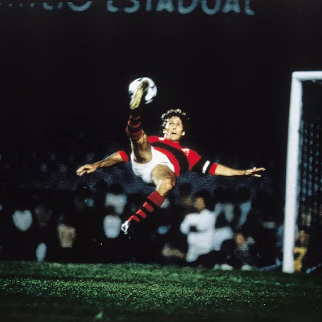

One of the world's best players of the late 1970s and early 1980s, he is regarded as one of the best playmakers and free kick specialists in history, able to bend the ball in all directions.
Zico is considered the best player of Flamengo's history.
Zico in 1980 winning his first Brazilian League's championship
Flamengo against Cobreloa, during the final mathc of 1981's Libertadores Cup

Zico performing one bicycle kick during a match for Flamengo
Zico dribbling three defenders from Liverpool, in 1981
"Look, it's hard to pick just one particular name that comes after me. Eusébio, for example, was a very good player, he played a lot. The other was Cruyff, very intelligent, he was an ace. But we can't forget about Zico either. He played too much. We have many other names but I think these three are the main ones that come after me."
- Pelé, Greatest Player of All Times
Signup to Zico's YouTube channel!
Zico has been posting weekly videos on his YouTube channel called Canal Zico 10